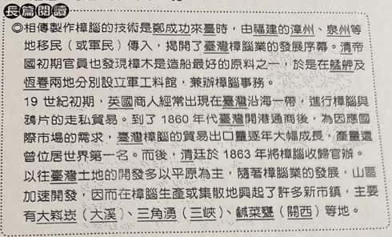
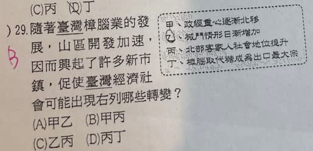

分享原卷｜第29題
完整原題
作答所需文章／材料
相傳製作樟腦的技術是鄭成功來臺時，由福建的漳州、泉州等地移民（或軍民）傳入，揭開了臺灣樟腦業的發展序幕。清帝國初期官員也發現樟木是造船最好的原料之一，於是在艋舺及恆春兩地分別設立軍工料館，兼辦樟腦事務。 19世紀初期，英國商人經常出現在臺灣沿海一帶，進行樟腦與鴉片的走私貿易。到了1860年代臺灣開港通商後，為因應國際市場的需求，臺灣樟腦的貿易出口量逐年大幅成長，產量還曾位居世界第一名。而後，清廷於1863年將樟腦收歸官辦。 以往臺灣土地的開發多以平原為主，隨著樟腦業的發展，山區加速開發，因而在樟腦生產或集散地興起了許多新市鎮，主要有大嵙崁（大溪）、三角湧（三峽）、鹹菜甕（關西）等地。先想一想，再查看答案、解說與原圖
逐項解析
| 選項與原句 | 判讀 | 句意與判斷理由 |
|---|---|---|
| (A) 甲乙 | 不選 | 甲符合北部產業發展；乙不能由這段材料推得，不能直接把樟腦業興起等同械鬥必然增多。 |
| (B) 甲丙 | 應選 | 甲為北部產地與貿易市鎮興起；丙為部分客家族人參與產業後累積財富與地方影響，符合本題考點。 |
| (C) 乙丙 | 不選 | 丙符合產業帶來社會變遷；乙缺乏此段材料支持。 |
| (D) 丙丁 | 不選 | 丙可選；樟腦出口成長及產量世界第一，不等於其出口值已超越糖而居所有貨品之首。 |
詳細說明與解題步驟
答案為B，甲、丙。文章指出大溪、三峽、關西等樟腦生產或集散市鎮興起，對應北部經濟活動增長；配合開港後茶、樟腦等商品貿易，促使政經重心北移。
為何客家人的社會地位可能提升？部分北部客家族人與地方家族參與近山地區的採樟、製腦、運輸或交易，從新產業獲得工作與經營機會；部分經營者累積資金，進一步投入地方建設、教育與公共事務，因此擴大地方影響力。這是在說特定歷史條件下的產業參與，不能理解成每位客家人都因此致富。
乙不能單憑本段推論。山林開發可能引起土地與資源衝突，但不能直接推出「分類械鬥日漸增加」，也不能像原AI一樣反過來斷言全臺治安因此改善、械鬥必然減少。
丁要分清比較指標。「臺灣樟腦產量曾居世界第一」是在與其他產地比較；「臺灣出口最大宗」是在與臺灣其他商品比較，兩者不是同一件事。清代開港後茶、糖、樟腦都是重要出口，不能由本文斷定樟腦取代糖，也不能說整個開港時期第一大宗始終都是茶。
原AI過度概括的說法不採：樟樹不是全部長在客家人的土地上，製腦也非單一族群獨占；不能以族群天生性格解釋產業分工。應回到地理環境、產業機會及實際經營參與。
核對：[客委會客家產業研究](https://cloud.hakka.gov.tw/site/hakka/public/Attachment/32208202271.pdf)、[客委會茶、糖與樟腦貿易研究](https://www.hakka.gov.tw/File/Attach/40953/File_77668.pdf)。
核對註記：已依原卷或完整文字核對並獨立解題；對應教材課次未確認，歸綜合。
原圖（僅本題）

